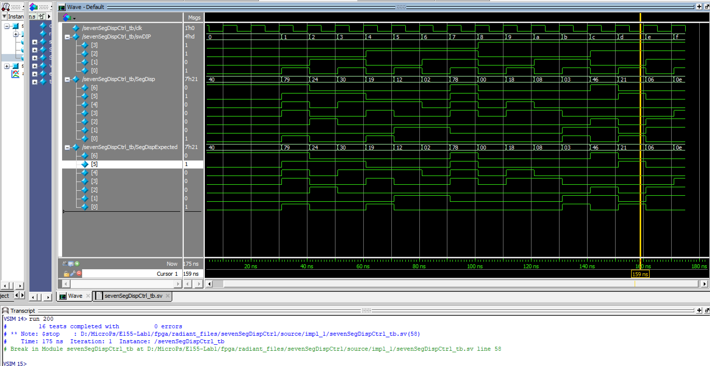

E155 Lab 3: Keypad Scanner
Introduction
In this lab, the FPGA was used to read inputs from a 4x4 matrix keypad, and drive the decoded inputs on a dual 7-segment display. The main purpose of this lab was to learn how to deal with timing issues within logic when combining asynchronous and synchronous inputs and data. The lab also leveraged the time-multiplexing logic explored in last week’s lab.
Experiment Setup and Design Overview
The FPGA received hexadecimal inputs from the keypad. The two last digits had to be displayed on the HDSP-521A dual 7-Segment display with the most recent entry appearing on the right display while the previous one shifts to the left display. The design had to follow a couple consntraits such as: the design should lock up current numbers when multiple buttons are pressed; only the first keypress should be registered, and most of all, there should be no switch bouncing. To implement this logic, I had to design a Finite State Machine (FSM) that handles detection and scanning of keypad inputs which are to be decoded and shown on the display.
Keypad FSM Logic
The finite state machine read the input from the keypad scanner, which were logic highs from the respective column of the pressed button. The FSM would continuously power one row of the scanner at a time until a button was pressed, connecting a row to a column and powering one of the column bits. My logic utilized a mealy FSM featuring a total of 12 states with each of the 4 rows attributed to 3 individual states serving a specific purpose as shown below:
The FSM logic starts in 4 scan states: S0, S3, S6, or S9 each corresponding to one of the 4 rows. They allow the FSM to scan around by powering an individual row. The FSM maintains this cycle over and over until the system registers a key input. Once a key press is detected, the FSM jumps into the candidate states: S1, S4, S7, or S10 where the respective row of the keypress is held HIGH. Sampling occurs in these states where the FSM waits and see if a key is valid. In case the key is invalid, such as due to bouncing or not held long enough, the FSM jumps back to the next scanning state, looking back at all rows. If the key is indeed valid (satisfies the one-hot logic) the FSM will stay in this state up until debouncing is complete and then jump into the hold states: S2, S5, S6, or S11 and stays there until the key is released and goes back to scanning.
The mentioned one-hot logic is to ensure that inputs are only recorded if a single column is pressed. This was achieved by using a bit manipulation trick outlined as (col != 4'b0000) && ((col & (col - 1)) == 4'b0000);. The value (col != 4'b0000) detects if at least one column is HIGH. The additional expression (col & (col - 1)) is always equal to 0 if the binary number is a power of 2 which is only possible if only one bit of the binary number is HIGH. Therefore combining the logic translates to: “TRUE if any column is HIGH and it’s only one column”. This logic helps lock the keypad by keeping the current numbers if more buttons at once therefore satisfying major constraints to successfuly complete this lab.
Synchronization and Switch Debouncing
The keypad uses mechanical switches which means any input to the FPGA will be asynchronous. Before any modules depending on the input received the value of active columns, the asynchronous column input had to go through a synchronizer module that lined it up properly with the rising clock edge. This meant that every dependent module was delayed by one clock cycle but received a synchronized column input. This was particularly essenstial to ensure proper operation of the keypad scanning logic. The second phase of synchronization involved slowing down the rate of state transition. The clock extracted from the HSOSC hf_osc module is 48MHz. At this rate switch bounces are magnified in the system and will be seen as a flurry of press/release events which would be wrong. Also the electrical signal from the keypad doesn’t settle instantly and a fast clock would sample the column input before it stabilizes. To solve this, the code implements a clock divider that slows the scan rate down to \(480Hz\) (noted as clk_en in code) which is slow enough to allow inputs to settle, but also not too slow to risk delayed sampling of inputs. Also the slow clock enabled implementation of an easier debouncing logic. Using an oscilloscope, I observed traces of keypresses on the different keypads provided and I received overall a miimum bouncing of \(\sim4ms\) and a maximum bouncing of \(\sim38ms\). In my logic I opted to debounce to ensure I’m safe up to a \(50ms\) which compared to the measured data, offers me a safe zone off the maximum bouncing observed. I implemented another counter, DBcounter to count for cycles ensuring a 50ms debounce. Given the clk frequency and the desired debouncing window, I calculated \(DBcounter = \frac{50ms*480Hz}{1000}\) giving me \(24\) ticks. These ticks determined how long the FSM held in the candidate states so that a key can be validated ensuring proper debouncing and sent into the hold states where it remains active until released.
Overall, my FSM transition logic relied on three major signals which were keyPress determining if a single column is active and DBcounter which is the debounce counter for the current press and DEBOUNCE which sets the threshold cycles for a valid key press. Detailed transitions are shown in the diagram below:
As shown in the Figure 1 above, given the specified signals, transition and cycling between the 12 states followed the following logic:
| Current State | Condition | Next State | Notes |
|---|---|---|---|
| S0 | keyPress |
S1 | Start debounce on row[0] |
!keyPress |
S3 | Advance to next row (row[1]) | |
| S1 | !keyPress |
S3 | Key released → move to next row |
keyPress && (DBcounter < DEBOUNCE) |
S1 | Keep debouncing row[0] | |
keyPress && (DBcounter >= DEBOUNCE) |
S2 | Debounce passed (row[0] confirmed) | |
| S2 | keyPress |
S2 | Hold while key remains pressed |
!keyPress |
S3 | Release → advance to next row | |
| S3 | keyPress |
S4 | Start debounce on row[1] |
!keyPress |
S6 | Advance to next row (row[2]) | |
| S4 | !keyPress |
S6 | Key released → move to next row |
keyPress && (DBcounter < DEBOUNCE) |
S4 | Keep debouncing row[1] | |
keyPress && (DBcounter >= DEBOUNCE) |
S5 | Debounce passed (row[1] confirmed) | |
| S5 | keyPress |
S5 | Hold while key remains pressed |
!keyPress |
S6 | Release → advance to next row | |
| S6 | keyPress |
S7 | Start debounce on row[2] |
!keyPress |
S9 | Advance to next row (row[3]) | |
| S7 | !keyPress |
S9 | Key released → move to next row |
keyPress && (DBcounter < DEBOUNCE) |
S7 | Keep debouncing row[2] | |
keyPress && (DBcounter >= DEBOUNCE) |
S8 | Debounce passed (row[2] confirmed) | |
| S8 | keyPress |
S8 | Hold while key remains pressed |
!keyPress |
S9 | Release → advance to next row | |
| S9 | keyPress |
S10 | Start debounce on row[3] |
!keyPress |
S0 | Wrap to row[0] | |
| S10 | !keyPress |
S0 | Key released → wrap to row[0] |
keyPress && (DBcounter < DEBOUNCE) |
S10 | Keep debouncing row[3] | |
keyPress && (DBcounter >= DEBOUNCE) |
S11 | Debounce passed (row[3] confirmed) | |
| S11 | keyPress |
S11 | Hold while key remains pressed |
!keyPress |
S0 | Release → wrap to row[0] | |
| (default) | (any) | S0 | Safe reset |
The FSM module had three major outputs: row[3:0] containing the value of the pressed row which is held and sent into the decoder to find the corresponding key; rowScan[3:0] following the same logic for row[3:0] but is used by the FPGA to signal which row on the breadboard to power on for scanning or reading inputs; en which signals to the decoder that a keypress is comfirmed so it can proceed to display numbers. The row logic exists within specific state groups. The enabler logic exists only in the candidates ( S1, S4, S7, or S10) but is asserted only after debouncing in those states is complete. The added dependency on clk_en is to ensure the enable is asserted on the clock edge, synchronizing it to the rest of actvities and behaviour in the FSM.
| Output Signal | State Group / Expression | Behavior |
|---|---|---|
| row[0] | state ∈ {S0, S1, S2} |
Asserted when FSM is scanning/reading row[0] |
| row[1] | state ∈ {S3, S4, S5} |
Asserted when FSM is scanning/reading row[1] |
| row[2] | state ∈ {S6, S7, S8} |
Asserted when FSM is scanning/reading row[2] |
| row[3] | state ∈ {S9, S10, S11} |
Asserted when FSM is scanning/reading row[3] |
| rowScan[3:0] | row[3:0] |
Actively drives the keypad row lines (one-hot) |
| en | state ∈ {S1, S4, S7, 10} |
Single-cycle enable pulse when a keypress is confirmed |
Key Decoding and Key Display Logic
The confirmed row, synchronized column, and the enable signal are received by the module keypadDecoder. The row-column sandwich is used to determine exactly which key was pressed. This module realigns the enable signal to the system clock producing a single-cycle pulse en_rise that detects the rising edge of the en signal. When the pulse hits, the module assigns the currently decoded key to sw1[3:0] and the previous value to sw2[3:0]. These two values are then sent to the time-multiplexing module, ledControl. The module maintains the logic and procedures similar to the one used in lab 2. The module will set HIGH the anode of the right display and send the value sw1[3:0] to be displayed and then does the same to the left display and send sw2[3:0]. This switching is done at \(240Hz\) which is sufficient enough for a person to not notice any flickering or bleeding between displays.
Design Implementation
The modules to enforce the keypad logic and those that control the respective circuit elements were written in SystemVerilog to run on the FPGA. To ensure proper communication and signal control, they all followed the hierachy in the block diagram below:
{kind=link}
After running the simulation ensuring modules work as expected, the full setup was installed on a breadboard to read the 4x4 matrix keypad and control the dual 7-segment display using the following schematic:
{kind=link}
As seen from the schematic, the keypad columns are hooked up to \(100k\Omega\) pulldown resistors and the 7-segment display to \(200\Omega\) series resistors to ensure reasonable (safe) current draw from the FPGA.
The 7-segment display LEDs have a typical forward voltage drop of \(\approx1.70V\). The target current draw per segment was \(8mA\) and the input voltage of \(3.3V\) from the FPGA. The 2N3906 transistors used have \(V_{\text{CESAT}}=0.2V\). I calculated the desired resistor values using \(R = \frac{V_{\text{in}} - V_{f} - V_{\text{CESAT}}}{I_{des}}\) obtaining that R should be at least \(\sim175\Omega\). I opted for \(\sim200\Omega\) which ensures a more safer margin in terms of current drawn from the FPGA. Similar calculation was used for transistors with \(V_{BEON}\approx0.85V\) and a target \(I_{BC}\approx8mA\) . This gives \(\sim306\Omega\) and I went for \(330\Omega\) for the transistor base which also is larger than the recommended to ensure a safer margin.
Results and Discussion
Testbench simulation
The testbenches were extremely helpful, especially for this particular lab. They helped me through my synchronization logic as I tried to ensure that all my signals are at the same clock cycles. They also helped me know how my scanning FSM was moving aroung and I noticed some issues that my FSM would set HIGH all rows before confirming a key which would display all 4 numbers in the pressed column before finaly settling on the actual number I pressed. This is where I figured out the benefit of tightening my FSM transitioning logic which fixed this issue.
{kind=link}
{kind=link}
The waves in the figure above show that the decoder will properly find the corresponding key and will display the default 4'hF anytime an invalid input is received such as when more than one row/col are reported as HIGH.
{kind=link}
The waves in Figure 8 above show that the the two displays turn on at different times as onSeg[1] and onSeg[1] oscillate oppositely. The waves shows that sevenSegIn chooses sW1 switch input when onSeg[1] is HIGH and sW2 input when switch onSeg[0] is HIGH showing the time multiplexing logic works.

The seven segment display also resopnds as expected.
Hardware Testing
All components were collected and assembled on an extended breadboard following the schematic in Figure 3. Using Radiant programmer, the code was uploaded to the FPGA to test the keypad responses, proper timing and synchronizatin, FSM logic, and the 7-segment display. The hardware responded properly as shown in the example video below:
Conclusion
This lab took around 28 hours to complete. A lot of time was lost in figuring out the proper keypad scanning logic. This included the FSM logic, transitions and different restrictions to ensure the experiment passes the given constraints. I lost a lot of time through synchronization and timing issues. This is where I would say that testebenches were helpful because they helped me see where my keys and signals were going wrong as I noticed scanning errors and things were delayed and received different clock cycles. To fix most of these errors I minimized my signals’ dependance on combinational logic. I made almost all signals sequential and limited combinational assignments to outputs of the modules only.
AI Prototype Summary
The goal of this prototype is to explore how AI handles design modularity when implementing digital systems. I used Chatgpt 5 to run the different prompts and it gave me the results below.
Monolithic Code Attempt
//------------------------------------------------------------
// iCE40 UP5K: 4x4 matrix keypad → dual 7-segment display
// - HSOSC internal clock (wrapper): HSOSC hf_osc ( .CLKHF(clk) );
// - Debounce-by-design: one key registered per full press/release
// - Balanced, flicker-free 2-digit multiplexing
//------------------------------------------------------------
//============================================================
// Tick generator: emits 1-cycle pulses (enables) at target rates
//============================================================
module tick_gen #(
parameter int unsigned CLK_HZ = 24_000_000, // <-- set to your HSOSC frequency
parameter int unsigned SCAN_HZ = 200, // keypad scan cadence
parameter int unsigned MUX_HZ = 2000 // display mux tick (≈2 kHz total)
)(
input logic clk,
input logic rst_n,
output logic scan_tick,
output logic mux_tick
);
localparam int unsigned SCAN_DIV = (CLK_HZ/SCAN_HZ);
localparam int unsigned MUX_DIV = (CLK_HZ/MUX_HZ);
logic [$clog2(SCAN_DIV)-1:0] scan_cnt;
logic [$clog2(MUX_DIV)-1:0 ] mux_cnt;
always_ff @(posedge clk) begin
if (!rst_n) begin
scan_cnt <= '0;
mux_cnt <= '0;
scan_tick <= 1'b0;
mux_tick <= 1'b0;
end else begin
// scan tick
if (scan_cnt == SCAN_DIV-1) begin
scan_cnt <= '0;
scan_tick <= 1'b1;
end else begin
scan_cnt <= scan_cnt + 1'b1;
scan_tick <= 1'b0;
end
// mux tick
if (mux_cnt == MUX_DIV-1) begin
mux_cnt <= '0;
mux_tick <= 1'b1;
end else begin
mux_cnt <= mux_cnt + 1'b1;
mux_tick <= 1'b0;
end
end
end
endmodule
//============================================================
// 4x4 keypad scanner (active-low matrix)
// - Drives one column low at a time; samples rows at scan_tick
// - Registers one key on initial detection; waits for full release
// Mapping (row, col) → hex:
// Col0: [1,4,7,E] Col1: [2,5,8,0]
// Col2: [3,6,9,F] Col3: [A,B,C,D]
//============================================================
module keypad_scanner_4x4 (
input logic clk,
input logic rst_n,
input logic scan_tick,
output logic [3:0] col_n, // columns driven (active-low)
input logic [3:0] row_n, // rows read (active-low, pull-ups)
output logic new_key, // 1-cycle strobe when new key registered
output logic [3:0] key_hex // hex code of the new key
);
// column index (round-robin)
logic [1:0] col_idx;
// FSM for one-key-per-press
typedef enum logic [1:0] {IDLE, SCANNING, WAIT_RELEASE} state_e;
state_e state, state_n;
// sampled rows (convert to active-high), activity flag, decode
logic [3:0] row_sample;
logic any_row_active;
logic [3:0] decoded_hex;
// drive columns: one low at a time
always_comb begin
col_n = 4'b1111;
col_n[col_idx] = 1'b0;
end
// rotate active column each scan tick
always_ff @(posedge clk) begin
if (!rst_n) col_idx <= 2'd0;
else if (scan_tick) col_idx <= col_idx + 2'd1;
end
// sample rows (active-low → active-high)
always_ff @(posedge clk) begin
if (!rst_n) row_sample <= 4'b0000;
else if (scan_tick) row_sample <= ~row_n;
end
assign any_row_active = |row_sample;
// decode (row, col) into hex value
always_comb begin
decoded_hex = 4'h0;
unique case (col_idx)
2'd0: begin // [1,4,7,E]
unique case (1'b1)
row_sample[0]: decoded_hex = 4'h1;
row_sample[1]: decoded_hex = 4'h4;
row_sample[2]: decoded_hex = 4'h7;
row_sample[3]: decoded_hex = 4'hE;
default: decoded_hex = 4'h0;
endcase
end
2'd1: begin // [2,5,8,0]
unique case (1'b1)
row_sample[0]: decoded_hex = 4'h2;
row_sample[1]: decoded_hex = 4'h5;
row_sample[2]: decoded_hex = 4'h8;
row_sample[3]: decoded_hex = 4'h0;
default: decoded_hex = 4'h0;
endcase
end
2'd2: begin // [3,6,9,F]
unique case (1'b1)
row_sample[0]: decoded_hex = 4'h3;
row_sample[1]: decoded_hex = 4'h6;
row_sample[2]: decoded_hex = 4'h9;
row_sample[3]: decoded_hex = 4'hF;
default: decoded_hex = 4'h0;
endcase
end
default: begin // Col3: [A,B,C,D]
unique case (1'b1)
row_sample[0]: decoded_hex = 4'hA;
row_sample[1]: decoded_hex = 4'hB;
row_sample[2]: decoded_hex = 4'hC;
row_sample[3]: decoded_hex = 4'hD;
default: decoded_hex = 4'h0;
endcase
end
endcase
end
// FSM: latch one key on first detection, then wait for full release
always_ff @(posedge clk) begin
if (!rst_n) begin
state <= IDLE;
key_hex <= 4'h0;
new_key <= 1'b0;
end else begin
state <= state_n;
new_key <= 1'b0; // default
if (scan_tick) begin
unique case (state)
SCANNING: if (any_row_active) begin
key_hex <= decoded_hex; // latch once
new_key <= 1'b1; // one-cycle strobe
end
default: /* no action */ ;
endcase
end
end
end
always_comb begin
state_n = state;
unique case (state)
IDLE: state_n = SCANNING;
SCANNING: state_n = (scan_tick && any_row_active) ? WAIT_RELEASE : SCANNING;
WAIT_RELEASE: state_n = (scan_tick && !any_row_active) ? SCANNING : WAIT_RELEASE;
default: state_n = SCANNING;
endcase
end
endmodule
//============================================================
// Hex → 7-segment (active-low) encoder
// Returns {dp,g,f,e,d,c,b,a}; dp kept off (1).
//============================================================
function automatic logic [7:0] hex_to_7seg_active_low (input logic [3:0] hex);
case (hex)
4'h0: hex_to_7seg_active_low = 8'b11000000;
4'h1: hex_to_7seg_active_low = 8'b11111001;
4'h2: hex_to_7seg_active_low = 8'b10100100;
4'h3: hex_to_7seg_active_low = 8'b10110000;
4'h4: hex_to_7seg_active_low = 8'b10011001;
4'h5: hex_to_7seg_active_low = 8'b10010010;
4'h6: hex_to_7seg_active_low = 8'b10000010;
4'h7: hex_to_7seg_active_low = 8'b11111000;
4'h8: hex_to_7seg_active_low = 8'b10000000;
4'h9: hex_to_7seg_active_low = 8'b10010000;
4'hA: hex_to_7seg_active_low = 8'b10001000;
4'hB: hex_to_7seg_active_low = 8'b10000011; // b
4'hC: hex_to_7seg_active_low = 8'b11000110;
4'hD: hex_to_7seg_active_low = 8'b10100001; // d
4'hE: hex_to_7seg_active_low = 8'b10000110;
4'hF: hex_to_7seg_active_low = 8'b10001110;
default: hex_to_7seg_active_low = 8'b11111111; // blank
endcase
endfunction
//============================================================
// Dual 7-segment driver (time-multiplexed, active-low I/O)
// - Alternates digits on mux_tick (e.g., 2 kHz → 1 kHz/digit)
//============================================================
module sevenseg2_mux #(
parameter bit ACTIVE_LOW_SEG = 1,
parameter bit ACTIVE_LOW_DIGIT = 1
)(
input logic clk,
input logic rst_n,
input logic mux_tick,
input logic [3:0] hex_lo, // most recent key (right digit)
input logic [3:0] hex_hi, // previous key (left digit)
output logic [7:0] seg, // {dp,g,f,e,d,c,b,a}
output logic [1:0] dig // digit enables [left,right]
);
logic cur; // 0=right, 1=left
logic [7:0] seg_raw;
always_ff @(posedge clk) begin
if (!rst_n) cur <= 1'b0;
else if (mux_tick) cur <= ~cur;
end
always_comb begin
seg_raw = hex_to_7seg_active_low(cur ? hex_hi : hex_lo); // table is active-low
seg = (ACTIVE_LOW_SEG) ? seg_raw : ~seg_raw;
// one digit active at a time
unique case (cur)
1'b0: dig = (ACTIVE_LOW_DIGIT) ? 2'b10 : 2'b01; // right on
default: dig = (ACTIVE_LOW_DIGIT) ? 2'b01 : 2'b10; // left on
endcase
end
endmodule
//============================================================
// TOP: HSOSC → tick_gen → keypad_scanner → 7-seg mux
// I/O assumptions (adjust to board):
// - Keypad columns: outputs active-low col_n[3:0]
// - Keypad rows: inputs active-low row_n[3:0] (pull-ups)
// - 7-seg segments: seg[7:0] active-low
// - 7-seg digits: dig[1:0] active-low (dig[1]=left, dig[0]=right)
//============================================================
module top_keypad_to_7seg (
input logic rst_n, // active-low reset
output logic [3:0] col_n,
input logic [3:0] row_n,
output logic [7:0] seg,
output logic [1:0] dig
);
// ----------------------------------------------------------------
// Internal High-Speed Oscillator (wrapper provided by Radiant)
// NOTE: Set tick_gen.CLK_HZ to match your HSOSC project setting.
// ----------------------------------------------------------------
logic clk;
HSOSC hf_osc (
.CLKHF(clk) // typical configs: 24 MHz or 48 MHz
);
// Timing ticks
logic scan_tick, mux_tick;
tick_gen #(
.CLK_HZ (24_000_000), // <-- change to 48_000_000 if HSOSC at 48 MHz
.SCAN_HZ(200),
.MUX_HZ (2000)
) i_ticks (
.clk(clk),
.rst_n(rst_n),
.scan_tick(scan_tick),
.mux_tick (mux_tick)
);
// Keypad scanner
logic new_key;
logic [3:0] key_hex;
keypad_scanner_4x4 i_scan (
.clk(clk),
.rst_n(rst_n),
.scan_tick(scan_tick),
.col_n(col_n),
.row_n(row_n),
.new_key(new_key),
.key_hex(key_hex)
);
// Shift register of last two keys: left=older, right=most-recent
logic [3:0] last_hi, last_lo;
always_ff @(posedge clk) begin
if (!rst_n) begin
last_hi <= 4'h0;
last_lo <= 4'h0;
end else if (new_key) begin
last_hi <= last_lo;
last_lo <= key_hex;
end
end
// 7-segment display driver (active-low)
sevenseg2_mux #(
.ACTIVE_LOW_SEG(1),
.ACTIVE_LOW_DIGIT(1)
) i_disp (
.clk(clk),
.rst_n(rst_n),
.mux_tick(mux_tick),
.hex_lo(last_lo), // right digit
.hex_hi(last_hi), // left digit
.seg(seg),
.dig(dig)
);
endmoduleModular Code Attempt
Prompt 1 gave the following:
// One-shot key registration for a 4x4 keypad scanner.
// Debounces press and release, latches a key code once per distinct press,
// and emits a single-cycle pulse when a new key is registered.
module keypad_one_shot #(
// Number of clk cycles required for a stable press OR stable release.
// Example: at 20 MHz, 100_000 ≈ 5 ms.
parameter int unsigned DEBOUNCE_CYCLES = 100_000
)(
input logic clk,
input logic rst_n, // active-low synchronous reset
// From the scanning front-end:
input logic any_key_raw, // 1 if any key is currently detected
input logic [3:0] key_code_raw, // hex code for the detected key (valid when any_key_raw=1)
// Registered, glitch-free outputs:
output logic new_key_pulse, // 1-cycle pulse when a NEW key is captured
output logic [3:0] new_key_code, // key code captured when new_key_pulse=1
output logic busy // high while a press/release cycle is in progress
);
// --------------------------------------------------------------------------
// 2-FF synchronizers for raw inputs (helps with CDC/glitches from scan domain)
// --------------------------------------------------------------------------
logic any_meta, any_sync;
logic [3:0] kc_meta, kc_sync;
always_ff @(posedge clk) begin
any_meta <= any_key_raw;
any_sync <= any_meta;
kc_meta <= key_code_raw;
kc_sync <= kc_meta;
end
// --------------------------------------------------------------------------
// FSM with press/release debouncing and single-cycle latch (LATCH state)
// --------------------------------------------------------------------------
typedef enum logic [2:0] {
IDLE, // no key pressed, waiting for press
DB_PRESS, // debouncing a press
LATCH, // 1-cycle pulse + capture
WAIT_RELEASE, // key is held; ignore everything until release
DB_RELEASE // debouncing the release
} state_t;
state_t state, state_n;
// Debounce counter
localparam int unsigned DBW = $clog2(DEBOUNCE_CYCLES+1);
logic [DBW-1:0] db_cnt, db_cnt_n;
// Latched code (registered output)
logic [3:0] code_q, code_n;
// Pulse (registered, one cycle only in LATCH)
logic pulse_q, pulse_n;
// Busy flag (registered for glitch-free behavior)
logic busy_q, busy_n;
// --------------------------------------------------------------------------
// Next-state / counters / outputs
// --------------------------------------------------------------------------
always_comb begin
// Defaults (hold)
state = state;
state_n = state;
db_cnt_n = db_cnt;
code_n = code_q;
pulse_n = 1'b0; // default: no pulse
busy_n = busy_q;
unique case (state)
IDLE: begin
busy_n = 1'b0;
db_cnt_n = '0;
if (any_sync) begin
// Start press debounce when a key first appears
state_n = DB_PRESS;
db_cnt_n = '0;
busy_n = 1'b1;
end
end
DB_PRESS: begin
busy_n = 1'b1;
if (any_sync) begin
// Count stable-high cycles
if (db_cnt == DEBOUNCE_CYCLES-1) begin
// Consider the press debounced; capture the code next cycle
state_n = LATCH;
db_cnt_n = '0;
end else begin
db_cnt_n = db_cnt + 1'b1;
end
end else begin
// Bounced back low; restart
state_n = IDLE;
db_cnt_n = '0;
end
end
LATCH: begin
busy_n = 1'b1;
pulse_n = 1'b1; // single-cycle pulse
code_n = kc_sync; // capture synchronized key code
// Move on to hold-off while key is held
state_n = WAIT_RELEASE;
db_cnt_n = '0;
end
WAIT_RELEASE: begin
busy_n = 1'b1;
db_cnt_n = '0;
if (!any_sync) begin
// Start release debounce once key goes away
state_n = DB_RELEASE;
db_cnt_n = '0;
end
end
DB_RELEASE: begin
busy_n = 1'b1;
if (!any_sync) begin
// Count stable-low cycles
if (db_cnt == DEBOUNCE_CYCLES-1) begin
// Fully released; ready for next press
state_n = IDLE;
db_cnt_n = '0;
end else begin
db_cnt_n = db_cnt + 1'b1;
end
end else begin
// Went high again; key pressed again before release finished
state_n = WAIT_RELEASE;
db_cnt_n = '0;
end
end
default: begin
state_n = IDLE;
db_cnt_n = '0;
busy_n = 1'b0;
end
endcase
end
// --------------------------------------------------------------------------
// State & output registers
// --------------------------------------------------------------------------
always_ff @(posedge clk) begin
if (!rst_n) begin
state <= IDLE;
db_cnt <= '0;
code_q <= 4'h0;
pulse_q <= 1'b0;
busy_q <= 1'b0;
end else begin
state <= state_n;
db_cnt <= db_cnt_n;
code_q <= code_n;
pulse_q <= pulse_n;
busy_q <= busy_n;
end
end
// --------------------------------------------------------------------------
// Drive module outputs
// --------------------------------------------------------------------------
assign new_key_pulse = pulse_q;
assign new_key_code = code_q;
assign busy = busy_q;
endmodulePrompt 2 gave the following:
// 4x4 matrix keypad scanner (active-low columns, active-low rows).
// - Cycles columns at a divided scan rate.
// - Detects exactly one key at a time (locks while pressed).
// - Reports a stable hex key code (0-9, A-D, E="*", F="#").
// - Provides "any_key" flag while a key is held.
//
// Standard keypad layout used:
//
// C0 C1 C2 C3
// R0: 1 2 3 A(10)
// R1: 4 5 6 B(11)
// R2: 7 8 9 C(12)
// R3: E(*) 0 F(#) D(13)
//
// Notes:
// * Columns are driven active-low, one at a time (others high).
// * Rows are sampled active-low.
// * While a key is held, the scanner holds that column asserted and keeps
// reporting the same code; other keys are ignored until release.
//
// Tune SCAN_DIV for your system clock to achieve a column tick of ~1–5 kHz.
// At 20 MHz: SCAN_DIV=5_000 -> 4 kHz per column, ~1 kHz full-frame scan.
module keypad_scanner #(
parameter int unsigned SCAN_DIV = 5_000 // clk cycles per column step
)(
input logic clk,
input logic rst_n, // active-low synchronous reset
// Matrix connections (external pull-ups recommended):
input logic [3:0] rows_n, // row inputs, active-low
output logic [3:0] cols_n, // column drives, active-low (one at a time)
// Results:
output logic any_key, // 1 while a key is pressed and held
output logic [3:0] key_code // stable hex code while any_key=1
);
// --------------------------------------------------------------------------
// Synchronize row inputs (they are asynchronous to clk / mechanical)
// --------------------------------------------------------------------------
logic [3:0] rows_meta, rows_sync_n;
always_ff @(posedge clk) begin
rows_meta <= rows_n;
rows_sync_n <= rows_meta;
end
// Positive-sense rows for easier logic (1 = pressed, 0 = idle):
wire [3:0] rows_p = ~rows_sync_n; // active-high: 1 means that row is asserted
// --------------------------------------------------------------------------
// Scan clock divider -> generates a single-cycle 'scan_tick'
// --------------------------------------------------------------------------
localparam int unsigned DW = $clog2(SCAN_DIV);
logic [DW-1:0] div_cnt;
logic scan_tick;
always_ff @(posedge clk) begin
if (!rst_n) begin
div_cnt <= '0;
scan_tick <= 1'b0;
end else begin
if (div_cnt == SCAN_DIV-1) begin
div_cnt <= '0;
scan_tick <= 1'b1;
end else begin
div_cnt <= div_cnt + 1'b1;
scan_tick <= 1'b0;
end
end
end
// --------------------------------------------------------------------------
// Column index and drive (active-low one-hot)
// --------------------------------------------------------------------------
logic [1:0] col_idx_q, col_idx_n;
logic [3:0] cols_drive_q;
// Active-low one-hot from index
function automatic logic [3:0] col_onehot_n(input logic [1:0] idx);
logic [3:0] oh;
begin
oh = 4'b1111;
unique case (idx)
2'd0: oh = 4'b1110;
2'd1: oh = 4'b1101;
2'd2: oh = 4'b1011;
2'd3: oh = 4'b0111;
endcase
return oh;
end
endfunction
// --------------------------------------------------------------------------
// FSM to scan and hold while a key is pressed
// --------------------------------------------------------------------------
typedef enum logic [1:0] {
SCAN = 2'b00, // rotate columns and look for a press
HOLD = 2'b01 // keep the detected column asserted; wait for release
} state_t;
state_t state_q, state_n;
// Latched row/column of the detected key (for code generation)
logic [1:0] latched_col_q, latched_col_n;
logic [1:0] latched_row_q, latched_row_n;
// Output registers
logic any_key_q, any_key_n;
logic [3:0] key_code_q, key_code_n;
// Priority row pick (first asserted row wins: R0 highest priority)
function automatic logic [1:0] pick_row(input logic [3:0] rows_active);
logic [1:0] r;
begin
// Priority: R0, then R1, then R2, then R3
if (rows_active[0]) r = 2'd0;
else if (rows_active[1]) r = 2'd1;
else if (rows_active[2]) r = 2'd2;
else r = 2'd3; // if none set, caller won't use result
return r;
end
endfunction
// Any row pressed?
wire any_row_pressed = |rows_p;
// Hex code lookup from (row, col) per the layout in the header.
function automatic logic [3:0] key_from_rc(input logic [1:0] r, input logic [1:0] c);
logic [3:0] code;
begin
unique case (r)
2'd0: begin // R0: 1,2,3,A
unique case (c)
2'd0: code = 4'h1;
2'd1: code = 4'h2;
2'd2: code = 4'h3;
2'd3: code = 4'hA;
endcase
end
2'd1: begin // R1: 4,5,6, B
unique case (c)
2'd0: code = 4'h4;
2'd1: code = 4'h5;
2'd2: code = 4'h6;
2'd3: code = 4'hB;
endcase
end
2'd2: begin // R2: 7,8,9, C
unique case (c)
2'd0: code = 4'h7;
2'd1: code = 4'h8;
2'd2: code = 4'h9;
2'd3: code = 4'hC;
endcase
end
default: begin // R3: E(*),0,F(#), D
unique case (c)
2'd0: code = 4'hE; // '*'
2'd1: code = 4'h0;
2'd2: code = 4'hF; // '#'
2'd3: code = 4'hD;
endcase
end
endcase
return code;
end
endfunction
// Next-state / outputs
always_comb begin
// Hold-by-default
state_n = state_q;
col_idx_n = col_idx_q;
cols_drive_q = col_onehot_n(col_idx_q);
latched_col_n = latched_col_q;
latched_row_n = latched_row_q;
any_key_n = any_key_q;
key_code_n = key_code_q;
unique case (state_q)
SCAN: begin
// Rotate columns at scan_tick
if (scan_tick) begin
col_idx_n = col_idx_q + 2'd1;
cols_drive_q = col_onehot_n(col_idx_n);
end
// Sample rows for the *currently driven* column
if (any_row_pressed) begin
// Lock onto the first asserted row; hold this column
latched_col_n = col_idx_q;
latched_row_n = pick_row(rows_p);
key_code_n = key_from_rc(latched_row_n, latched_col_n);
any_key_n = 1'b1;
state_n = HOLD;
// keep cols_drive_q at current column (do not advance while HOLD)
end
end
HOLD: begin
// Keep driving only the latched column while pressed
cols_drive_q = col_onehot_n(latched_col_q);
// Maintain outputs while any row is still asserted
if (!any_row_pressed) begin
// Released: clear flag and return to scanning next column
any_key_n = 1'b0;
state_n = SCAN;
// Resume scanning from column after the held one
col_idx_n = latched_col_q + 2'd1;
end
end
default: begin
state_n = SCAN;
end
endcase
end
// Registers
always_ff @(posedge clk) begin
if (!rst_n) begin
state_q <= SCAN;
col_idx_q <= 2'd0;
latched_col_q <= 2'd0;
latched_row_q <= 2'd0;
any_key_q <= 1'b0;
key_code_q <= 4'h0;
end else begin
state_q <= state_n;
col_idx_q <= col_idx_n;
latched_col_q <= latched_col_n;
latched_row_q <= latched_row_n;
any_key_q <= any_key_n;
key_code_q <= key_code_n;
end
end
// Drive external signals (registered/glitch-free)
assign cols_n = cols_drive_q; // active-low one-hot
assign any_key = any_key_q;
assign key_code= key_code_q;
endmodulePrompt 3 gave the following:
// Top-level: 4x4 keypad → last-two keys → dual 7-seg display (multiplexed)
// Target: Lattice iCE40 UP5K. Root clock from internal HF oscillator.
//
// External interface (typical):
// - rows_n[3:0] : keypad rows, active-low inputs (external pull-ups recommended)
// - cols_n[3:0] : keypad columns, active-low outputs (one driven low at a time)
// - seg[6:0] : seven-seg segment outputs (a..g). Polarity depends on your board.
// - dig_en_n[1:0]: active-low digit enables: [0]=left (older), [1]=right (most recent)
// - rst_n : active-low synchronous reset (can tie high if unused)
//
// Notes:
// - Refresh runs at ~1 kHz per digit (2 kHz frame) by default to avoid flicker.
// - Display updates only when a NEW key is registered by the one-shot block.
module top_keypad_last2 (
input logic rst_n, // active-low synchronous reset
input logic [3:0] rows_n, // keypad rows (active-low)
output logic [3:0] cols_n, // keypad columns (active-low)
output logic [6:0] seg, // segments a..g (polarity per your sevenSegment)
output logic [1:0] dig_en_n // digit enables, active-low: [0]=left, [1]=right
);
// ==========================================================================
// Internal HF oscillator (root clock)
// ==========================================================================
// Toolchain note: some flows use SB_HFOSC; the project here uses HSOSC.
// If your tool complains, rename HSOSC→SB_HFOSC and keep ports the same.
logic clk_hf;
HSOSC hf_osc (
.CLKHFEN (1'b1),
.CLKHFPU (1'b1),
.CLKHF (clk_hf)
);
// ==========================================================================
// Parameters (tune if you know your actual CLK_HZ)
// ==========================================================================
// iCE40 HFOSC commonly configured around ~20–48 MHz. Set appropriately.
localparam int unsigned CLK_HZ = 20_000_000;
// Keypad scan column step ~2 kHz → ~500 Hz full-frame (4 columns).
// (The scanner also has its own divider; this sets that parameter.)
localparam int unsigned SCAN_STEP_HZ = 2_000;
localparam int unsigned SCAN_DIV = (CLK_HZ / SCAN_STEP_HZ);
// One-shot debounce ~5 ms for both press and release:
localparam int unsigned DEBOUNCE_US = 5_000;
localparam int unsigned DEBOUNCE_CYCLES = (CLK_HZ / 1_000_000) * DEBOUNCE_US;
// 7-seg refresh: ~1 kHz per digit (2 kHz frame).
localparam int unsigned DIGIT_HZ = 1_000;
localparam int unsigned REFRESH_DIV = (CLK_HZ / (2 * DIGIT_HZ)); // toggles between two digits
// ==========================================================================
// Keypad scanner: cycles columns, samples rows, holds one key while pressed
// ==========================================================================
logic scan_any_key;
logic [3:0] scan_key_code;
keypad_scanner #(
.SCAN_DIV(SCAN_DIV)
) u_scan (
.clk (clk_hf),
.rst_n (rst_n),
.rows_n (rows_n),
.cols_n (cols_n),
.any_key (scan_any_key),
.key_code (scan_key_code)
);
// ==========================================================================
// One-shot registrar: debounced single-cycle pulse per DISTINCT press
// ==========================================================================
logic new_key_pulse;
logic [3:0] new_key_code;
logic press_busy; // (not used by top; available for debug)
keypad_one_shot #(
.DEBOUNCE_CYCLES(DEBOUNCE_CYCLES)
) u_oneshot (
.clk (clk_hf),
.rst_n (rst_n),
.any_key_raw (scan_any_key),
.key_code_raw (scan_key_code),
.new_key_pulse (new_key_pulse),
.new_key_code (new_key_code),
.busy (press_busy)
);
// ==========================================================================
// Last-two keys shift register (update ONLY on new_key_pulse)
// Left digit = older, Right digit = most recent
// ==========================================================================
logic [3:0] key_old_q, key_new_q;
always_ff @(posedge clk_hf) begin
if (!rst_n) begin
key_old_q <= 4'h0;
key_new_q <= 4'h0;
end else begin
if (new_key_pulse) begin
key_old_q <= key_new_q; // older ← previous most recent
key_new_q <= new_key_code; // recent ← new
end
end
end
// ==========================================================================
// Seven-seg refresh (2:1 mux) with registered outputs for no ghosting
// - We toggle which digit is enabled at a constant rate.
// - Segment data is registered at the same time.
// ==========================================================================
localparam int unsigned REFRESH_W = (REFRESH_DIV > 1) ? $clog2(REFRESH_DIV) : 1;
logic [REFRESH_W-1:0] refresh_cnt;
logic refresh_tick;
logic which_digit_q; // 0 = left/older, 1 = right/recent
always_ff @(posedge clk_hf) begin
if (!rst_n) begin
refresh_cnt <= '0;
refresh_tick <= 1'b0;
end else begin
if (refresh_cnt == REFRESH_DIV-1) begin
refresh_cnt <= '0;
refresh_tick <= 1'b1;
end else begin
refresh_cnt <= refresh_cnt + 1'b1;
refresh_tick <= 1'b0;
end
end
end
// Toggle active digit on each tick
always_ff @(posedge clk_hf) begin
if (!rst_n) begin
which_digit_q <= 1'b0;
end else if (refresh_tick) begin
which_digit_q <= ~which_digit_q;
end
end
// Segment encoder instances (combinational), selected then registered
// If your sevenSegment is a function, adapt accordingly.
logic [6:0] seg_left_w, seg_right_w;
logic [6:0] seg_reg_q;
sevenSegment u_seg_left (.in(key_old_q), .seg(seg_left_w));
sevenSegment u_seg_right (.in(key_new_q), .seg(seg_right_w));
// Register the selected segment pattern and digit enables together
always_ff @(posedge clk_hf) begin
if (!rst_n) begin
seg_reg_q <= '0;
// Both disables high (inactive) — active-low enables
dig_en_n <= 2'b11;
end else if (refresh_tick) begin
if (which_digit_q == 1'b0) begin
// Show LEFT (older)
seg_reg_q <= seg_left_w;
dig_en_n <= 2'b10; // enable [0]=left low, [1]=right high
end else begin
// Show RIGHT (most recent)
seg_reg_q <= seg_right_w;
dig_en_n <= 2'b01; // enable [1]=right low, [0]=left high
end
end
end
// Drive segment outputs
assign seg = seg_reg_q;
endmoduleI found it interesting to learn that there are different ways to approach solution to problems in digital design. Monolithic design seemed simple to understand, synthesize and debug because I believe it was even more straigthforward for the LLM to debug any errors in it’s code. When I got to the Modular design, the FSM was getting entangled in it’s different signals across the 3 major function modules. That sometimes it would misstep and call a different signal and use it for the wrong lines. It was a tough job for me as well trying to figure out errors in 400 code lines that I didn’t write. Overall, the design followed a familiar roadmap but the implementation was a little different because the LLM was focused more on passing the constraints that it implemented some redundant measures to counter things like bouncing or timing errors. This might be a good practice but it uses a lot of resources and makes the code more complex. Overall, I learn new things from the LLM everyweek when we use it. I liked the use of parameter which let’s me set global variables that I can change easily without scouring through my entire code or risk errors by mistyping the number itself. This week, I learnt that redundant functionality can be helpful in case you expect your logic to slip somewhere so you can counter the errors.